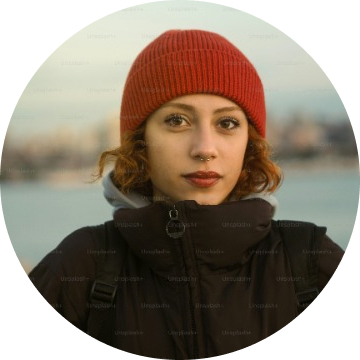

Misión
Impulsar el crecimiento sostenible de MYPES mediante capital, educación, tecnología y comunidad.

Nacimos para cerrar la brecha entre empresas con potencial y el capital, conocimiento y tecnología que necesitan para competir.
ITAQIN surge al observar que muchas MYPES no fracasan por falta de talento, sino por falta de acceso a financiamiento adecuado, información ordenada y acompañamiento estratégico.
La empresa combina criterios fintech con asesoría humana para convertir necesidades de capital en planes de crecimiento medibles.
Impulsar el crecimiento sostenible de MYPES mediante capital, educación, tecnología y comunidad.
Ser la plataforma financiera de referencia para empresas emergentes y negocios tradicionales en expansión.
Criterios que guían producto, riesgo, servicio y cultura.
Transparencia en costos, condiciones y recomendaciones.
Decisiones basadas en datos financieros y operación real.
Acompañamiento entendible para directivos de MYPES.
Productos diseñados para empresas que quieren escalar.
Trabajamos con mentalidad de largo plazo: velocidad fintech, responsabilidad financiera y obsesión por impacto empresarial.
Perfil financiero, tecnológico y de crecimiento empresarial.

Soluciones simples para decisiones financieras complejas.
Conexiones, mentoría y aprendizaje entre empresarios.